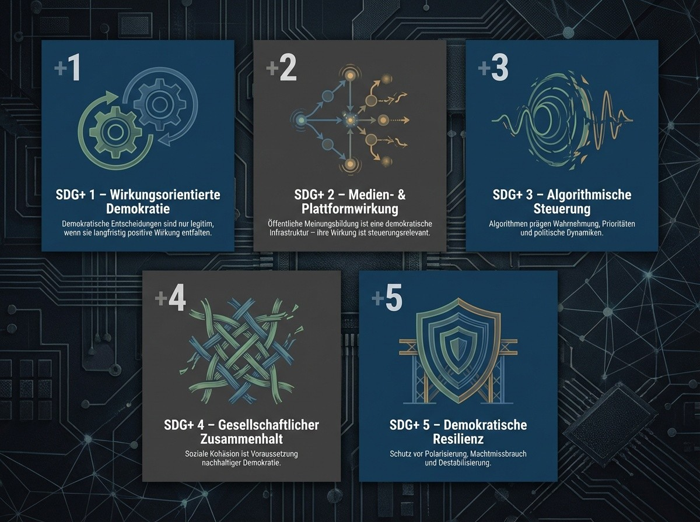

Abstract
Die Sustainable Development Goals (SDGs) gelten als globaler Referenzrahmen für nachhaltige Entwicklung. Sie definieren Ziele für Armutsbekämpfung, Klimaschutz, Bildung und soziale Gerechtigkeit - setzen jedoch stillschweigend voraus, dass die politischen und gesellschaftlichen Systeme, die diese Ziele umsetzen sollen, stabil, lernfähig und zukunftsorientiert handeln. Diese Annahme erweist sich zunehmend als fragil. Demokratische Entscheidungsprozesse können - trotz formaler Legitimation - systemisch schädliche Wirkungen entfalten: durch Kurzfristlogiken, Desinformation, Mehrheitsentscheidungen gegen planetare Grenzen oder die Erosion institutionellen Vertrauens.
Dieses Essay argumentiert daher: Demokratie ist kein Selbstzweck, sondern ein Instrument kollektiver Steuerung. Ihre Legitimität ergibt sich nicht allein aus Verfahren, sondern aus ihrer messbaren Wirkung auf Mensch, Planet und gesellschaftliche Stabilität. Nachhaltigkeit ohne einen demokratischen Wirkungsrahmen bleibt strukturell ungesichert.
Mit dem Konzept SDG+ wird eine systemische Erweiterung der SDGs vorgeschlagen. SDG+ ergänzt die bestehenden Nachhaltigkeitsziele um wirkungsorientierte Demokratiedimensionen - darunter Rechtsstaatlichkeit, Medien- und Informationsqualität, gesellschaftlicher Zusammenhalt und Resilienz gegen Polarisierung. Diese Erweiterung versteht sich nicht als normativer Appell, sondern als operativer Steuerungsrahmen. SDG+ definiert die Bedingungen, unter denen demokratische Entscheidungen langfristig tragfähig, legitim und zukunftssicher wirken können.
1. Einleitung: Die blinde Stelle der Nachhaltigkeitsdebatte
Nachhaltigkeit ist eines der zentralen politischen und gesellschaftlichen Leitmotive des 21. Jahrhunderts. Mit den Sustainable Development Goals (SDGs) haben die Vereinten Nationen erstmals einen global abgestimmten Zielrahmen geschaffen, der ökologische, soziale und ökonomische Herausforderungen gemeinsam adressiert. Armut, Hunger, Bildung, Klimaschutz, Gesundheit und Gleichstellung werden nicht länger isoliert betrachtet, sondern als miteinander verwobene Aufgaben einer globalen Verantwortungsgemeinschaft.
Diese Zielarchitektur war ein notwendiger Schritt. Doch sie bleibt unvollständig.
Die SDGs definieren was erreicht werden soll - sie beantworten jedoch nur unzureichend die Frage, unter welchen systemischen Bedingungen diese Ziele dauerhaft erreichbar sind. Sie sind normativ stark, operativ jedoch abhängig von politischen, wirtschaftlichen und gesellschaftlichen Strukturen, deren Stabilität zunehmend unter Druck steht. Genau hier liegt die blinde Stelle der Nachhaltigkeitsdebatte.
Denn Nachhaltigkeit scheitert in der Praxis immer seltener an fehlendem Wissen oder mangelnden Zieldefinitionen - sondern an instabilen Steuerungssystemen. Klimaziele werden beschlossen und gleichzeitig unterlaufen. Soziale Mindeststandards werden anerkannt und politisch relativiert. Langfristige Risiken sind bekannt, werden aber demokratisch immer wieder zugunsten kurzfristiger Interessen vertagt. Diese Widersprüche sind kein moralisches Versagen einzelner Akteure, sondern Ausdruck eines strukturellen Problems: Nachhaltigkeit wird in Systemen verfolgt, die ihre eigene Wirkung nicht ausreichend reflektieren.
Besonders deutlich wird dies im Verhältnis von Nachhaltigkeit und Demokratie. In der öffentlichen Debatte gelten demokratische Verfahren häufig als inhärente Garantie für verantwortungsvolle Entscheidungen. Mehrheiten werden mit Legitimität gleichgesetzt, Meinungsfreiheit mit Wahrheitsoffenheit, Wahlentscheidungen mit Zukunftsfähigkeit. Diese Gleichsetzungen sind historisch verständlich - systemisch jedoch nicht haltbar.
Demokratische Prozesse können, trotz formaler Korrektheit, Entscheidungen hervorbringen, die langfristig Mensch, Umwelt und gesellschaftlichen Zusammenhalt schädigen. Sie können wissenschaftliche Erkenntnisse ignorieren, planetare Grenzen überschreiten oder soziale Spaltung vertiefen - und dabei dennoch demokratisch legitimiert sein. Nachhaltigkeit, die sich ausschließlich auf Ziele stützt, ohne die Qualität der Entscheidungsprozesse und deren Wirkungen systematisch zu bewerten, bleibt daher fragil.
Dieses Essay setzt genau an dieser Stelle an. Es argumentiert, dass nachhaltige Entwicklung nicht allein eine Frage richtiger Ziele ist, sondern vor allem eine Frage funktionierender Wirkungssteuerung. Demokratie ist in diesem Zusammenhang kein Selbstzweck und keine Garantie per se. Sie ist ein Instrument kollektiver Koordination - und als solches nur dann legitim und zukunftsfähig, wenn sie positive Wirkung entfaltet.
Die zentrale These lautet daher: Nachhaltigkeit benötigt einen demokratischen Wirkungsrahmen. Ohne eine systematische Rückkopplung zwischen demokratischen Entscheidungen und ihren realen Folgen für Mensch, Planet und gesellschaftliche Stabilität bleiben selbst die besten Zielkataloge wirkungslos. Das Konzept SDG+ versteht sich als Antwort auf diese Leerstelle. Es erweitert die bestehenden Nachhaltigkeitsziele nicht moralisch, sondern systemisch - um jene Bedingungen, die Demokratie selbst nachhaltig machen.
2. Wirkung als übergeordnete Steuerungsgröße
Nachhaltigkeit wird in politischen und ökonomischen Debatten häufig über Werte, Absichten oder Zielerklärungen verhandelt. Begriffe wie Verantwortung, Gerechtigkeit oder Zukunftsfähigkeit prägen Programme, Strategien und Leitbilder. Doch so notwendig diese normativen Setzungen sind, so wenig reichen sie aus, um komplexe gesellschaftliche Systeme tatsächlich zu steuern. In hochvernetzten, dynamischen Strukturen entscheidet nicht die Intention, sondern die Wirkung.
Wirkung bezeichnet nicht das, was beabsichtigt wurde, sondern das, was real eintritt. Sie ist das Ergebnis von Entscheidungen, Strukturen und Wechselwirkungen - unabhängig von ihrer moralischen Motivation. Gerade in komplexen Systemen können gut gemeinte Maßnahmen negative Effekte erzeugen, während scheinbar neutrale Entscheidungen langfristig tiefgreifende Schäden verursachen. Nachhaltigkeit, verstanden als dauerhafte Sicherung von Lebensgrundlagen, ist daher keine Frage guter Absichten, sondern korrekter Steuerung.
In diesem Sinne ist Wirkung die übergeordnete Steuerungsgröße moderner Gesellschaften. Sie verbindet normative Zielsetzungen mit empirischer Realität. Während Ziele formulieren, was erreicht werden soll, zeigt Wirkung, ob und wie dies tatsächlich geschieht. Ohne diesen Wirkungsbezug bleibt Politik symbolisch, Wirtschaft kurzsichtig und gesellschaftliche Selbstkorrektur zufällig.
Die Wirkungsdimension lässt sich dabei nicht auf ökologische Kennzahlen reduzieren. Nachhaltige Entwicklung ist kein isoliertes Umweltprojekt, sondern ein systemisches Gleichgewicht zwischen mindestens drei untrennbaren Dimensionen: dem Wohlergehen des Menschen, der Tragfähigkeit des Planeten und der Stabilität der gesellschaftlichen Ordnung. Erst im Zusammenspiel dieser drei Ebenen entsteht langfristige Resilienz.
Die Trias Mensch - Planet - Demokratie bildet daher den normativen und analytischen Kern einer wirkungsorientierten Nachhaltigkeitslogik. Der Mensch steht für soziale Sicherheit, Gesundheit, Bildung und Teilhabe. Der Planet repräsentiert ökologische Grenzen, Ressourcenregeneration und physische Lebensgrundlagen. Die Demokratie schließlich ist das Steuerungssystem, das kollektive Entscheidungen koordiniert, Konflikte moderiert und gesellschaftliche Lernprozesse ermöglicht. Keine dieser Dimensionen ist für sich stabil. Soziale Sicherheit ohne ökologische Tragfähigkeit ist ebenso wenig nachhaltig wie Klimaschutz ohne gesellschaftliche Akzeptanz oder demokratische Steuerungsfähigkeit.
Entscheidend ist dabei: Demokratie fungiert in dieser Trias nicht als moralischer Wert, sondern als funktionale Infrastruktur. Sie ist das Betriebssystem, über das gesellschaftliche Entscheidungen getroffen, korrigiert und legitimiert werden. Ihre Qualität bemisst sich nicht allein an formalen Verfahren, sondern an ihrer Fähigkeit, Wirkungen zu erkennen, zu bewerten und anzupassen. Eine Demokratie, die systematisch falsche Anreize setzt, wissenschaftliche Evidenz ignoriert oder langfristige Schäden produziert, verliert ihre steuernde Funktion - auch wenn ihre Prozesse formal korrekt bleiben.
Wirkungsorientierung bedeutet in diesem Kontext eine Verschiebung des Maßstabs. Statt kurzfristiger Erfolgsindikatoren wie Wachstum, Zustimmung oder Wiederwahl rückt die langfristige Systemwirkung in den Mittelpunkt. Politische Entscheidungen, wirtschaftliche Aktivitäten und gesellschaftliche Diskurse werden nicht primär danach beurteilt, ob sie populär, profitabel oder rechtlich zulässig sind, sondern danach, welche kumulativen Effekte sie auf Mensch, Planet und demokratische Stabilität entfalten.
Diese Perspektive erfordert eine neue Form der Verantwortung. Verantwortung entsteht nicht mehr aus der Einhaltung von Regeln allein, sondern aus der Übernahme von Wirkungsfolgen. Wer entscheidet, trägt Verantwortung für die absehbaren systemischen Konsequenzen dieser Entscheidung - unabhängig davon, ob diese Konsequenzen beabsichtigt waren. Wirkung wird damit zur verbindenden Kategorie zwischen Freiheit und Verantwortung.
Mit dieser Wirkungslogik verschiebt sich auch der Charakter von Nachhaltigkeit. Sie wird vom normativen Ziel zur operativen Steuerungsaufgabe. Nicht das Bekenntnis zu Nachhaltigkeit ist entscheidend, sondern die Fähigkeit eines Systems, seine eigene Wirkung zu messen, Fehlwirkungen zu erkennen und strukturell zu korrigieren. Genau an diesem Punkt setzen die bestehenden SDGs zu kurz an: Sie formulieren Ziele, ohne die Wirkungsfähigkeit der Systeme selbst systematisch abzusichern.
Das Konzept SDG+ knüpft hier an. Es versteht Wirkung nicht als Ergänzung, sondern als Voraussetzung nachhaltiger Entwicklung. SDG+ macht die Qualität der demokratischen Steuerung, der öffentlichen Kommunikation und der gesellschaftlichen Kohäsion selbst zum Gegenstand von Wirkungsbewertung. Damit wird Nachhaltigkeit erstmals nicht nur als Ziel, sondern als lernfähiger, selbstkorrigierender Prozess gedacht.
3. Die strukturelle Schwäche der klassischen SDGs
Die SDGs markieren einen historischen Fortschritt in der internationalen Zusammenarbeit. Erstmals wurden ökologische, soziale und ökonomische Zielsetzungen in einem gemeinsamen Rahmen zusammengeführt und politisch verbindlich kommuniziert. Ihre Stärke liegt in ihrer universellen Anschlussfähigkeit: Staaten mit sehr unterschiedlichen politischen Systemen, wirtschaftlichen Interessen und kulturellen Prägungen konnten sich auf einen gemeinsamen Zielkatalog verständigen.
Genau in dieser Anschlussfähigkeit liegt jedoch auch ihre strukturelle Schwäche.
Die SDGs sind als Zielsystem konzipiert, nicht als Steuerungssystem. Sie formulieren normative Endpunkte - etwa Armutsreduktion, Klimaschutz oder hochwertige Bildung -, ohne die Funktionsfähigkeit der Systeme zu adressieren, die diese Ziele umsetzen sollen. Implizit setzen sie voraus, dass politische Entscheidungsprozesse rational, lernfähig und langfristig orientiert verlaufen; dass öffentliche Diskurse auf Wissen und Wahrheit beruhen; dass Institutionen stabil, rechtsstaatlich und durchsetzungsfähig sind. Diese Voraussetzungen werden jedoch weder abgesichert noch überprüft.
Damit entsteht eine systemische Asymmetrie: Die SDGs definieren ambitionierte Ziele, verfügen aber über keinen Mechanismus, der verhindert, dass ihre Umsetzung durch demokratische Fehlsteuerung, Desinformation oder kurzfristige Machtlogiken unterlaufen wird. Nachhaltigkeit wird dadurch zu einem Projekt innerhalb bestehender Systeme - nicht zu einer Frage der Systemqualität selbst.
Besonders deutlich wird diese Schwäche im Verhältnis von SDGs und Demokratie. Zwar enthalten die Ziele implizite Annahmen über gute Regierungsführung, Teilhabe und Institutionenstärke, doch sie machen Demokratie selbst nicht zum Gegenstand systematischer Wirkungsbewertung. Demokratische Prozesse gelten als gegeben, nicht als potenziell fehleranfällige Variable. Die Möglichkeit, dass demokratische Entscheidungen systematisch gegen Nachhaltigkeitsziele wirken können, bleibt weitgehend unthematisiert.
In der Praxis zeigt sich jedoch, dass demokratische Systeme keineswegs automatisch nachhaltige Entscheidungen hervorbringen. Politische Mehrheiten können Maßnahmen blockieren, die wissenschaftlich notwendig wären. Wahlzyklen begünstigen kurzfristige Entlastungen gegenüber langfristigen Investitionen. Populistische Narrative können komplexe Zusammenhänge verzerren und politische Prioritäten verschieben. All dies geschieht innerhalb formal demokratischer Verfahren - und bleibt im Rahmen der SDGs weitgehend unsichtbar.
Die Folge ist ein paradoxes Spannungsverhältnis: Einerseits dienen die SDGs als moralischer und politischer Referenzrahmen. Andererseits operieren die politischen Systeme, die sie umsetzen sollen, nach Logiken, die diesen Zielen strukturell entgegenstehen können. Nachhaltigkeit wird so zu einem Add-on, das mit bestehenden Macht-, Medien- und Marktlogiken konkurriert, statt diese selbst zu verändern.
Hinzu kommt, dass die SDGs primär auf Zielerreichung fokussieren, nicht auf Zielkonflikte. In realen Gesellschaften stehen ökologische, soziale und ökonomische Interessen regelmäßig in Konkurrenz. Ohne eine übergeordnete Wirkungslogik werden diese Konflikte nicht systemisch gelöst, sondern politisch ausgehandelt - häufig zugunsten der kurzfristig lauteren oder mächtigeren Interessen. Die SDGs bieten hierfür keine Entscheidungskriterien, sondern lediglich Zielmarken.
Damit fehlt den SDGs ein zentraler Selbstschutzmechanismus: Sie können nicht erkennen, wann die Systeme, die sie tragen sollen, selbst dysfunktional werden. Weder die Qualität öffentlicher Diskurse noch die Stabilität demokratischer Institutionen noch die Resilienz gegen Polarisierung und Desinformation sind integraler Bestandteil ihrer Logik. Nachhaltigkeit wird dadurch von der Integrität der politischen und gesellschaftlichen Infrastruktur entkoppelt.
Diese strukturelle Blindheit ist kein konzeptioneller Fehler im engeren Sinne, sondern Ausdruck des historischen Kontexts, in dem die SDGs entstanden sind. Sie wurden in einer Phase formuliert, in der Demokratie, Rechtsstaatlichkeit und wissenschaftsbasierte Politik als weitgehend gesichert galten - zumindest in den maßgeblichen internationalen Arenen. Diese Annahme ist heute nicht mehr haltbar.
Vor diesem Hintergrund wird deutlich: Die zentrale Schwäche der SDGs liegt nicht in ihren Zielen, sondern in ihrem fehlenden Wirkungsrahmen. Sie beantworten die Frage, was erreicht werden soll, ohne systematisch zu klären, wie demokratische Entscheidungsprozesse gestaltet sein müssen, damit diese Ziele nicht kontinuierlich unterlaufen werden. Nachhaltigkeit bleibt so abhängig von Systemen, deren eigene Stabilität und Steuerungsfähigkeit nicht ausreichend reflektiert wird.
An genau diesem Punkt setzt die Erweiterung durch SDG+ an. Sie verschiebt den Fokus von der bloßen Zieldefinition auf die Qualität der Systeme selbst - und damit auf die Wirkungsbedingungen nachhaltiger Entwicklung.
4. Demokratie ist kein Selbstzweck
Demokratie gilt in politischen und gesellschaftlichen Debatten häufig als inhärenter Wert. Sie wird nicht nur als Verfahren kollektiver Entscheidungsfindung verstanden, sondern als moralische Garantie für Legitimität, Gerechtigkeit und Fortschritt. Diese normative Aufladung ist historisch erklärbar - systemisch jedoch unzureichend. Denn sie verengt den Blick auf demokratische Prozesse, ohne deren reale Wirkungen und strukturelle Voraussetzungen angemessen zu berücksichtigen.
Die verbreitete Gleichsetzung von Demokratie und „guten Entscheidungen“ beruht auf einer prozeduralen Verkürzung. Sie unterstellt, dass Entscheidungen allein dadurch legitim und zukunftsfähig werden, dass sie nach demokratischen Regeln zustande kommen. Mehrheit wird mit Verantwortung gleichgesetzt, Meinungsfreiheit mit Wahrheitsoffenheit, Zustimmung mit Rationalität. Diese Annahmen halten einer systemischen Betrachtung nicht stand.
Demokratische Verfahren garantieren Beteiligung - sie garantieren jedoch weder Erkenntnis noch Wirkungskompetenz. Mehrheitsentscheidungen können wissenschaftliche Evidenz ignorieren, kurzfristige Interessen privilegieren oder langfristige Schäden erzeugen. Sie können ökologische Grenzen überschreiten, soziale Spaltung vertiefen oder demokratische Institutionen selbst aushöhlen - und dabei dennoch formal korrekt zustande kommen. In solchen Fällen bleibt Demokratie prozedural intakt, verliert jedoch ihre steuernde Funktion.
Diese Problematik verschärft sich unter den Bedingungen digitaler Öffentlichkeiten. Demokratische Meinungsbildung findet heute nicht mehr primär in institutionell moderierten Räumen statt, sondern in algorithmisch kuratierten Kommunikationsumgebungen.
Digitale Plattformen strukturieren, welche Themen sichtbar werden, welche Emotionen verstärkt und welche Narrative belohnt werden. Sie fungieren damit faktisch als vorpolitische Steuerungsinstanzen demokratischer Wahrnehmung - ohne selbst demokratisch legitimiert oder wirkungsgebunden zu sein.
Die Logik dieser Plattformen folgt nicht deliberativen, sondern ökonomischen Kriterien. Algorithmen optimieren auf Aufmerksamkeit, Verweildauer und Interaktion. Empörung, Angst und Polarisierung erweisen sich dabei als besonders wirksam. Komplexität wird vereinfacht, Zuspitzung belohnt, Differenzierung benachteiligt. Öffentliche Kommunikation verschiebt sich von Argumentation zu Reaktion, von Abwägung zu Erregung. Demokratie wird nicht abgeschafft, sondern verzerrt.
Ein zentrales Symptom dieser Verzerrung ist das, was hier als reaktive Demokratielogik beschrieben werden kann: politische Akteure, Medienformate und öffentliche Debatten springen von Thema zu Thema, getrieben von algorithmisch gesetzten Reizen. Dieses „Stöckchen-Springen“ erzeugt den Eindruck permanenter Beteiligung, untergräbt jedoch systematisch langfristige Steuerungsfähigkeit. Aufmerksamkeit ersetzt Priorisierung, Resonanz ersetzt Verantwortung.
Meinungsfreiheit bleibt unter diesen Bedingungen formal unangetastet, verliert jedoch ihre orientierende Funktion. Wo jede Aussage Reichweite generieren kann, unabhängig von ihrem Wahrheitsgehalt oder ihrer Wirkung, erodieren gemeinsame Wirklichkeitsgrundlagen. Wahrheit wird relativiert, Vertrauen geschwächt, demokratische Lernprozesse blockiert. Diese Dynamiken sind keine Fehlentwicklungen einzelner Akteure, sondern Ausdruck struktureller Fehlanreize innerhalb der digitalen Aufmerksamkeitsökonomie.
Vor diesem Hintergrund wird deutlich: Demokratie ist kein Selbstzweck. Sie ist ein Instrument kollektiver Koordination - und als solches nur dann legitim, wenn sie ihre eigene Wirkung reflektiert und korrigierbar bleibt. Legitimität entsteht nicht allein aus Verfahren, sondern aus der Verbindung von Verfahren und Verantwortung. Eine demokratische Entscheidung, die systemisch vorhersehbare Schäden erzeugt oder ihre eigenen Voraussetzungen untergräbt, verliert ihren normativen Anspruch - selbst wenn sie formal korrekt zustande gekommen ist.
Diese Perspektive relativiert Demokratie nicht, sondern präzisiert ihren Anspruch. Sie macht sichtbar, dass demokratische Freiheit ohne Wirkungsrahmen selbst zur Gefahr für ihre Grundlagen werden kann. Demokratie ohne Wirkungskompass wird nicht neutral, sondern potenziell destruktiv: rechtlich intakt, aber funktional erschöpft.
Die Konsequenz daraus ist nicht weniger Demokratie, sondern eine konzeptionelle Schärfung. Demokratie muss als wirkungsgebundene Entscheidungsform verstanden werden - eingebettet in eine mediale und kommunikative Infrastruktur, deren Effekte sichtbar, bewertbar und korrigierbar sind. Erst dort, wo demokratische Verfahren mit Verantwortung für ihre systemischen Folgen rückgekoppelt werden, erfüllt Demokratie ihre eigentliche Funktion: kollektive Freiheit zu ermöglichen, ohne ihre eigenen Voraussetzungen zu zerstören.
5. Wirkungsorientierte Demokratie: eine notwendige Präzisierung
Die Kritik an Demokratie als Selbstzweck zielt nicht auf ihre Abschaffung, sondern auf ihre funktionale Weiterentwicklung. Die Herausforderung besteht nicht darin, demokratische Verfahren zu ersetzen, sondern sie unter veränderten gesellschaftlichen Bedingungen wirksam zu halten. Weder autoritäre Steuerung noch technokratische Expertokratie bieten hierfür eine tragfähige Lösung. Beide reduzieren Komplexität, indem sie Beteiligung begrenzen - und erzeugen damit neue Legitimationsdefizite. Die notwendige Präzisierung lautet daher nicht weniger Demokratie, sondern wirkungsorientierte Demokratie.
Wirkungsorientierte Demokratie versteht demokratische Verfahren nicht als Endpunkt politischer Legitimation, sondern als Teil eines lernenden Steuerungssystems. Entscheidungen behalten ihre demokratische Herkunft, verlieren jedoch ihren Anspruch auf Unantastbarkeit. Sie werden nicht nur beschlossen, sondern fortlaufend an ihren realen Folgen gemessen. Legitimität entsteht damit nicht statisch, sondern dynamisch - aus dem Zusammenspiel von Verfahren, Wirkung und Korrekturfähigkeit.
Diese Logik gewinnt besondere Bedeutung unter den Bedingungen digitaler Öffentlichkeiten. Wenn Meinungsbildung, Aufmerksamkeit und politische Agenda-Setting maßgeblich durch Plattformen und Algorithmen geprägt werden, reicht es nicht aus, demokratische Prozesse allein auf der Ebene formaler Entscheidungen zu betrachten. Wirkungsorientierte Demokratie muss auch die Bedingungen der Meinungsbildung selbst in den Blick nehmen. Nicht als Zensurfrage, sondern als Steuerungsfrage.
Denn algorithmisch getriebene Aufmerksamkeitsökonomien erzeugen systematische Fehlanreize: Eskalation wird belohnt, Vereinfachung verstärkt, Angst und Empörung monetarisiert. Politische Akteure, Medienformate und öffentliche Debatten reagieren zunehmend auf diese Reize. Demokratie wird dadurch reaktiv statt deliberativ. Entscheidungen entstehen nicht aus Priorisierung, sondern aus Resonanz. Dieses Muster - das permanente Reagieren auf algorithmisch gesetzte Impulse - untergräbt langfristige Steuerungsfähigkeit, ohne formale demokratische Regeln zu verletzen.
Wirkungsorientierte Demokratie setzt genau hier an. Sie erweitert den Verantwortungsbegriff demokratischer Entscheidungen um ihre kommunikativen und medialen Wirkungen. Verantwortung endet nicht mit dem Beschluss oder der Wahl, sondern umfasst auch die absehbaren Effekte auf Diskursqualität, gesellschaftlichen Zusammenhalt und demokratische Lernfähigkeit. Wer entscheidet, trägt Verantwortung nicht nur für Zustimmung, sondern für Wirkung - auch dort, wo diese Wirkung über Plattformlogiken vermittelt wird.
Diese Erweiterung verändert nicht das demokratische Grundprinzip, sondern dessen Qualitätsmaßstab. Freiheit bleibt konstitutiv, Meinungsvielfalt geschützt, politische Auseinandersetzung notwendig. Neu ist jedoch die verbindliche Rückkopplung: Demokratische Entscheidungen und Kommunikationsformen dürfen nicht dauerhaft Wirkungen erzeugen, die den Voraussetzungen demokratischer Freiheit selbst widersprechen. Freiheit, die ihre eigenen Grundlagen zerstört, verliert ihren normativen Anspruch.
Wirkungsorientierte Demokratie unterscheidet sich damit klar von autoritären Modellen. Sie zentralisiert keine Macht, sondern verteilt Verantwortung. Sie ersetzt politische Aushandlung nicht durch technokratische Vorgaben, sondern ergänzt sie um überprüfbare Wirkungsmaßstäbe. Wissenschaft und Expertise erhalten dabei keinen Entscheidungsmonopolstatus, wohl aber eine zentrale Rolle bei der Abschätzung systemischer Risiken und Langzeitfolgen.
Ein zentrales Element wirkungsorientierter Demokratie ist Transparenz. Wirkungen müssen sichtbar, messbar und öffentlich verhandelbar sein - auch dort, wo sie indirekt über mediale Infrastrukturen entstehen. Fehlwirkungen werden nicht moralisch sanktioniert, sondern systemisch adressiert. Demokratie wird so vom punktuellen Entscheidungsakt zum kontinuierlichen Lernprozess.
Diese Perspektive verändert auch den Umgang mit Zielkonflikten. In pluralistischen Gesellschaften sind Zielkonflikte unvermeidlich. Wirkungsorientierte Demokratie löst sie nicht allein durch Mehrheitslogik, sondern durch Wirkungsabwägung. Nicht die kurzfristig resonanzstärkste Position erhält Vorrang, sondern jene, die langfristig die Stabilität des Gesamtsystems wahrt. Das bedeutet keinen Konsenszwang, sondern Priorisierung entlang nachvollziehbarer Wirkungsfolgen.
Im Kontext nachhaltiger Entwicklung ist diese Präzisierung entscheidend. Entscheidungen, die ökologische Kipppunkte überschreiten, gesellschaftliche Polarisierung verstärken oder demokratische Institutionen schwächen, sind auch dann problematisch, wenn sie demokratisch legitimiert wurden. Wirkungsorientierte Demokratie erkennt diese Grenzen an und macht sie explizit zum Teil des Entscheidungsrahmens.
Damit wird Demokratie selbst zum Gegenstand von Qualitätssicherung. Sie bleibt offen für Wandel, aber nicht indifferent gegenüber ihren eigenen Effekten. Ihre Stärke liegt nicht in Unfehlbarkeit, sondern in Korrekturfähigkeit. Wirkungsorientierung verleiht dieser Korrekturfähigkeit erstmals eine systematische Grundlage - auch unter den Bedingungen digitaler Plattformgesellschaften.
Erst in dieser präzisierten Form kann Demokratie jene Rolle erfüllen, die ihr im Rahmen nachhaltiger Entwicklung zukommt: kollektive Freiheit mit kollektiver Verantwortung zu verbinden - und ihre eigenen Voraussetzungen dauerhaft zu sichern.
6. SDG+ - die systemische Erweiterung

Die bisherigen Überlegungen führen zu einer klaren Schlussfolgerung: Nachhaltigkeit scheitert nicht primär an fehlenden Zielen, sondern an fehlender Systemfähigkeit. Die SDGs formulieren ambitionierte Zielmarken für eine lebenswerte Zukunft. Doch sie setzen stillschweigend voraus, dass die politischen, medialen und gesellschaftlichen Systeme, die diese Ziele umsetzen sollen, selbst stabil, lernfähig und verantwortungsorientiert funktionieren. Diese Voraussetzung ist unter den Bedingungen moderner, digital vermittelter Demokratien nicht mehr gegeben.
SDG+ setzt genau an dieser Leerstelle an. Es versteht sich nicht als Ergänzung um weitere inhaltliche Ziele, sondern als systemische Absicherung der bestehenden SDGs. Während die SDGs definieren, was erreicht werden soll, adressiert SDG+ die Frage, unter welchen Wirkungsbedingungen demokratische Gesellschaften überhaupt in der Lage sind, diese Ziele dauerhaft zu verfolgen.
Im Zentrum von SDG+ steht daher nicht Zielerweiterung, sondern Systemqualität. Nachhaltige Entwicklung wird nicht länger als Ergebnis guter Absichten verstanden, sondern als Resultat funktionierender Steuerungsarchitekturen. SDG+ verschiebt den Fokus von Zielerreichung zu Wirkungsfähigkeit - und macht jene Infrastrukturen sichtbar, die demokratische Entscheidungsprozesse tragen oder unterminieren.
Konkret erweitert SDG+ den Nachhaltigkeitsrahmen um mehrere zentrale Wirkungsdimensionen, die bislang als implizite Voraussetzungen behandelt wurden.
Erstens Demokratie und Rechtsstaatlichkeit. SDG+ betrachtet demokratische Systeme nicht als statischen Hintergrund, sondern als variable Wirkungsfaktoren. Bewertet wird nicht allein die formale Existenz demokratischer Verfahren, sondern ihre Fähigkeit, langfristige Verantwortung zu ermöglichen, institutionelles Vertrauen zu sichern und systemische Lernprozesse aufrechtzuerhalten. Demokratie wird damit nicht normativ geschützt, sondern funktional qualifiziert.
Zweitens Medien-, Plattform- und Informationsqualität. SDG+ erkennt an, dass demokratische Steuerung untrennbar an öffentliche Wahrnehmung gebunden ist. Digitale Plattformen und algorithmische Kuratierungssysteme strukturieren heute, welche Themen sichtbar werden, welche Emotionen verstärkt und welche Diskurse belohnt werden. Diese Systeme folgen überwiegend ökonomischen Optimierungslogiken - insbesondere der Maximierung von Aufmerksamkeit, Interaktion und Verweildauer.
Die daraus entstehende Aufmerksamkeits- und Angstökonomie ist kein Kommunikationsproblem, sondern ein Steuerungsproblem. Sie begünstigt Polarisierung, Vereinfachung und Eskalation, während Differenzierung, Kontextualisierung und langfristige Perspektiven systematisch benachteiligt werden. Politische Meinungsbildung wird reaktiv, nicht deliberativ. Das verbreitete „Stöckchen-Springen“ öffentlicher Debatten ist Ausdruck dieser strukturellen Fehlkopplung zwischen Aufmerksamkeit und Verantwortung.
SDG+ macht diese Effekte als negative Systemwirkungen sichtbar. Nicht einzelne Inhalte oder Meinungen stehen im Fokus, sondern die kumulative Wirkung medialer und algorithmischer Strukturen auf demokratische Rationalität, Diskursqualität und gesellschaftlichen Zusammenhalt. Plattformen werden damit erstmals als vorpolitische Steuerungsinstanzen begriffen, deren Wirkungen einer demokratischen Wirkungsbewertung unterliegen müssen.
Drittens gesellschaftlicher Zusammenhalt. Nachhaltigkeit setzt soziale Kohäsion voraus. SDG+ integriert daher Indikatoren für Vertrauen, Teilhabe, Inklusion und Konfliktfähigkeit. Polarisierung, systematische Feindbildkonstruktionen oder die Normalisierung von Entmenschlichung gelten nicht als legitime Nebenprodukte politischer Auseinandersetzung, sondern als negative Wirkungen mit langfristigen sozialen und demokratischen Kosten.
Viertens Resilienz gegenüber Machtmissbrauch und Destabilisierung. SDG+ fragt, inwieweit politische, mediale und wirtschaftliche Strukturen anfällig für autoritäre Dynamiken, Desinformation oder Machtkonzentration sind. Nicht formale Stabilität, sondern tatsächliche Widerstandsfähigkeit demokratischer Systeme gegenüber inneren und äußeren Erosionen wird zum Bewertungsmaßstab.
Diese Wirkungsdimensionen sind keine zusätzlichen politischen Ziele, sondern Bedingungen der Möglichkeit nachhaltiger Entwicklung. Ohne sie bleiben ökologische und soziale Fortschritte fragil, reversibel oder politisch angreifbar. SDG+ verschiebt damit den Nachhaltigkeitsdiskurs von moralischen Zielappellen hin zu struktureller Verantwortung.
Entscheidend ist dabei der operative Charakter von SDG+. Es formuliert keinen Wertekanon, sondern einen Wirkungsrahmen. Demokratie, Medien und Plattformen werden nicht idealisiert oder verteufelt, sondern anhand ihrer realen Effekte bewertet. Wahrheit wird nicht normativ behauptet, sondern als funktionale Voraussetzung kollektiver Steuerungsfähigkeit behandelt. Freiheit bleibt erhalten - aber nicht folgenlos.
Damit schließt SDG+ die zentrale Lücke der klassischen SDGs. Es verbindet ökologische und soziale Zielorientierung mit demokratischer und medialer Systemverantwortung. Nachhaltigkeit wird nicht länger als politisches Zusatzprogramm verstanden, sondern als Eigenschaft funktionierender gesellschaftlicher Steuerung.
SDG+ ist insofern keine Erweiterung aus Idealismus, sondern aus systemischer Notwendigkeit. Es anerkennt, dass nachhaltige Entwicklung im 21. Jahrhundert nur dort möglich ist, wo Demokratie, Öffentlichkeit und digitale Infrastrukturen selbst wirkungsfähig gestaltet werden. Erst unter diesen Bedingungen können die Ziele der SDGs mehr sein als gut gemeinte Versprechen - nämlich tragfähige Leitlinien kollektiver Zukunftsgestaltung.
7. Von normativen Zielen zu operativer Steuerung
Ein zentrales Defizit bisheriger Nachhaltigkeits- und Demokratiedebatten liegt in der Trennung von normativer Zielsetzung und realer Steuerungswirkung. Ziele werden formuliert, Programme verabschiedet, Werte beschworen - doch ihre tatsächlichen Effekte bleiben häufig unsichtbar, fragmentiert oder politisch folgenlos. Nachhaltigkeit erscheint so als moralisches Versprechen, nicht als funktionierendes Steuerungsprinzip.
SDG+ setzt genau an dieser Bruchstelle an. Es versteht Nachhaltigkeit nicht primär als Zielerreichung, sondern als steuerungsfähigen, rückkoppelbaren Prozess. Entscheidend ist nicht, dass Ziele existieren, sondern wie Entscheidungen getroffen, umgesetzt, beobachtet und korrigiert werden. Damit verschiebt sich der Fokus von normativer Legitimation hin zu operativer Verantwortung - auch und gerade unter den Bedingungen digital vermittelter Öffentlichkeit.
Der zentrale Mechanismus dieser Verschiebung ist die Wirkungsprüfung. Politische Entscheidungen, wirtschaftliche Aktivitäten und kommunikative Interventionen werden nicht nur ex ante begründet, sondern ex post an ihren realen Effekten gemessen. Wirkung wird damit zur verbindlichen Rückkopplungsgröße zwischen Entscheidung und Verantwortung. Fehlwirkungen verlieren ihren Status als unvermeidliche Nebenfolgen und werden als systemische Signale verstanden, die Anpassung erfordern.
Diese Logik betrifft nicht nur klassische Politikfelder, sondern auch mediale und digitale Infrastrukturen. Plattformdesign, algorithmische Priorisierung und Aufmerksamkeitsmechanismen entfalten reale gesellschaftliche Wirkungen - auf Diskursqualität, politische Prioritäten, emotionale Dynamiken und demokratische Lernfähigkeit. SDG+ macht diese Effekte steuerungsrelevant, ohne in Inhaltskontrolle oder normative Zensur zu verfallen. Bewertet wird nicht was gesagt wird, sondern welche Wirkungen systematisch entstehen.
Im Rahmen wirkungsorientierter Steuerung verändert sich auch das Verständnis demokratischer Legitimität. Entscheidungen bleiben politisch, plural und konfliktbehaftet. Neu ist jedoch, dass ihre Legitimität nicht mit dem Beschluss endet. Sie steht unter dem Vorbehalt ihrer Wirkung. Politische Freiheit wird so dauerhaft mit Rechenschaftspflicht verbunden - gegenüber messbaren Effekten auf Mensch, Planet und demokratische Stabilität.
SDG+ fungiert hierbei als übergeordneter Orientierungs- und Bewertungsrahmen. Es definiert keine Einzelmaßnahmen, sondern Wirkungsfelder, entlang derer unterschiedliche Steuerungsinstrumente ausgerichtet werden können. Dazu zählen unter anderem wirkungsbasierte Haushaltsführung, wirkungsorientierte Steuer- und Abgabensysteme, institutionalisierte Wirkungsaufsicht sowie transparente Wirkungsberichte. Diese Instrumente ersetzen politische Entscheidungen nicht, sondern machen ihre Folgen sichtbar, vergleichbar und korrigierbar.
Besondere Bedeutung kommt dabei der zeitlichen Dimension zu. Viele systemische Wirkungen - etwa im Klima-, Demokratie- oder Medienbereich - entfalten sich verzögert. SDG+ ermöglicht es, langfristige Wirkungsziele verbindlich zu machen, ohne demokratische Flexibilität aufzugeben. Entscheidungen können angepasst, revidiert oder korrigiert werden - jedoch nicht folgenlos. Langfristige Schäden verlieren ihren politischen Blindspot.
Damit verändert sich auch die Rolle staatlicher Institutionen. Der Staat agiert weniger als moralischer Akteur und stärker als Systemarchitekt. Seine Aufgabe besteht nicht darin, richtige Inhalte vorzuschreiben, sondern Rahmenbedingungen zu schaffen, in denen wirkungsorientierte Entscheidungen wahrscheinlicher werden. SDG+ liefert hierfür den normativen und operativen Referenzrahmen.
Zugleich wirkt diese Steuerungslogik entpolitisierend im konstruktiven Sinne. Nachhaltigkeits- und Demokratiekonflikte werden nicht länger primär ideologisch verhandelt, sondern strukturell. Statt Schuldzuweisungen treten Wirkungsanalysen, statt moralischer Empörung überprüfbare Effekte. Politik verliert dadurch nicht an Gestaltungsmacht, sondern gewinnt an Orientierung und Glaubwürdigkeit.
Unter den Bedingungen digitaler Plattformgesellschaften ist diese operative Perspektive entscheidend. Wo Aufmerksamkeit, Angst und Polarisierung systematisch verstärkt werden, reicht es nicht aus, auf individuelle Medienkompetenz oder moralische Appelle zu setzen. Es bedarf einer strukturellen Wirkungssteuerung, die Fehlanreize sichtbar macht und korrigierbar hält. SDG+ bietet hierfür den Rahmen - ohne Meinungsfreiheit zu beschneiden, aber auch ohne Wirkungen auszublenden.
Damit wird Nachhaltigkeit vom abstrakten Zukunftsversprechen zur überprüfbaren Gegenwartsaufgabe. SDG+ übersetzt normative Ziele in institutionelle Praxis und macht nachhaltige Entwicklung erstmals systemisch belastbar - auch im digitalen Raum demokratischer Öffentlichkeit.
8. Politische Unbequemlichkeit und systemische Notwendigkeit
Ein wirkungsorientierter Nachhaltigkeitsrahmen wie SDG+ bleibt nicht folgenlos. Er verändert nicht nur Zielhierarchien, sondern greift in die Logik politischer, medialer und wirtschaftlicher Steuerung selbst ein. Genau darin liegt seine politische Unbequemlichkeit - und zugleich seine systemische Notwendigkeit.
SDG+ entzieht sich den vertrauten Ordnungsmustern politischer Auseinandersetzung. Es operiert weder entlang klassischer Links-Rechts-Gegensätze noch innerhalb etablierter Lagerlogiken. Stattdessen verschiebt es den Maßstab politischer Bewertung grundlegend: Nicht Intention, Rhetorik oder formale Mehrheit entscheiden über Legitimität, sondern die reale Wirkung politischer, medialer und wirtschaftlicher Entscheidungen. Diese Verschiebung relativiert eingespielte Legitimationsmuster - und erzeugt Widerstand, gerade weil sie strukturell prüft, statt moralisch zu urteilen.
Besonders sichtbar wird diese Unbequemlichkeit in aktuellen politischen Entwicklungen. In den Vereinigten Staaten zeigt die erneute Präsidentschaft Donald Trumps, wie demokratische Verfahren formal bestehen können, während ihre Wirkungsfähigkeit erodiert. Polarisierung, permanente Eskalation öffentlicher Kommunikation, die Missachtung institutioneller Begrenzungen und die strategische Nutzung medialer Aufmerksamkeitslogiken untergraben langfristige Steuerungsfähigkeit - nicht durch Abschaffung demokratischer Prozesse, sondern durch ihre wirkungsblinde Instrumentalisierung. Demokratische Legitimation wird hier zunehmend mit Resonanz verwechselt.
Ähnliche Dynamiken lassen sich auch in europäischen Demokratien beobachten, wenn auch in anderer Ausprägung. In Deutschland etwa verschiebt sich der politische Diskurs unter dem Druck rechtspopulistischer Narrative. Die CDU unter Friedrich Merz steht exemplarisch für eine Entwicklung, in der etablierte Parteien beginnen, migrations- und gesellschaftspolitische Deutungsmuster der extremen Rechten aufzugreifen oder zu normalisieren, um kurzfristige Zustimmung zu sichern. Auch hier bleibt das Verfahren demokratisch, während die Wirkung - Polarisierung, Verrohung des Diskurses, Verschiebung des demokratischen Koordinatensystems - zunehmend problematisch wird.
SDG+ macht diese Entwicklungen nicht moralisch angreifbar, sondern wirkungsökonomisch sichtbar. Es fragt nicht, ob politische Positionen legitim geäußert werden dürfen, sondern welche systemischen Effekte sie entfalten. Populistische Mobilisierung, Angstnarrative oder bewusst vereinfachte Problemerzählungen können demokratisch erfolgreich sein und dennoch langfristige Kosten für gesellschaftlichen Zusammenhalt, institutionelles Vertrauen und demokratische Lernfähigkeit erzeugen. SDG+ benennt diese Kosten - und entzieht ihnen damit ihre politische Unschuld.
Diese Sichtbarkeit betrifft nicht nur politische Akteure, sondern auch mediale und digitale Infrastrukturen. Plattformen und Medienökonomien profitieren bislang davon, dass ihre gesellschaftlichen Wirkungen nur begrenzt zugerechnet werden. Algorithmen, die auf Aufmerksamkeit, Empörung und Polarisierung optimieren, verstärken demokratische Fehlkopplungen, ohne selbst Teil demokratischer Verantwortung zu sein. SDG+ verschiebt diese Logik, indem es Plattform- und Medienwirkungen als demokratisch relevante Systemwirkungen behandelt.
Unbequem ist SDG+ auch für wirtschaftliche Akteure. Unternehmen, Medienhäuser und Plattformbetreiber agieren bislang weitgehend unter der Prämisse, dass gesellschaftliche Nebenwirkungen ihres Handelns nicht systematisch bewertet werden. SDG+ koppelt ökonomische Freiheit an Wirkungsverantwortung - nicht über Gesinnung oder Moral, sondern über überprüfbare Effekte auf Mensch, Planet und demokratische Stabilität. Gewinn bleibt legitim, verliert jedoch seine Wirkungslosigkeit.
Auch für demokratische Öffentlichkeiten selbst ist SDG+ herausfordernd. Es entlastet nicht von individueller Verantwortung, relativiert jedoch den Mythos souveräner Meinungsbildung. Öffentliche Debatten erscheinen nicht länger als reine Ausdrucksformen freier Willensbildung, sondern als strukturell geprägte Prozesse. Das weit verbreitete „Stöckchen-Springen“ politischer und medialer Akteure wird nicht moralisch diskreditiert, sondern als Symptom fehlender Wirkungsrückkopplung erkannt.
Die Widerstände gegen SDG+ sind daher kein Zeichen seiner Schwäche, sondern ein Indikator seiner Relevanz. Systeme wehren sich nicht gegen symbolische Reformen, sondern gegen Eingriffe, die ihre internen Anreizstrukturen verändern. SDG+ greift genau dort an: bei der Verbindung von Macht und Verantwortung, von Freiheit und Wirkung - in Politik, Medien und Wirtschaft zugleich.
Gerade in einer Zeit multipler Krisen - ökologisch, sozial, demokratisch und medial - ist diese Verbindung unverzichtbar. Nachhaltigkeit kann nicht länger als Zusatzprogramm innerhalb bestehender Logiken behandelt werden. Sie erfordert eine Anpassung der Steuerungsmechanismen selbst. SDG+ ist Ausdruck dieser Einsicht.
Politische Bequemlichkeit mag kurzfristig Stabilität suggerieren. Systemische Stabilität entsteht jedoch nur dort, wo Fehlanreize erkannt, benannt und korrigierbar gemacht werden. SDG+ stellt diese Fragen nicht aus moralischem Anspruch, sondern aus funktionaler Notwendigkeit. Es fordert nicht mehr Haltung, sondern mehr Verantwortung - messbar, überprüfbar und lernfähig.
9. Nachhaltigkeit braucht einen demokratischen Wirkungsrahmen
Die vorangegangenen Kapitel haben gezeigt, dass nachhaltige Entwicklung nicht an fehlenden Zielen scheitert, sondern an der Qualität der Systeme, die diese Ziele umsetzen sollen. Die SDGs formulieren ambitionierte und notwendige Zielmarken. Doch ohne einen Rahmen, der demokratische Entscheidungsprozesse, mediale Öffentlichkeiten und digitale Infrastrukturen selbst wirkungsfähig macht, bleiben diese Ziele politisch fragil, gesellschaftlich angreifbar und strukturell reversibel.
Demokratie erweist sich dabei nicht als automatische Garantie für Nachhaltigkeit. Sie ist ein zentrales Instrument kollektiver Koordination - aber auch ein fehleranfälliges. Wo demokratische Verfahren ohne Wirkungsrückkopplung operieren, können sie kurzfristige Interessen privilegieren, langfristige Schäden legitimieren und ihre eigenen Voraussetzungen untergraben. Diese Dynamik ist kein theoretisches Szenario, sondern in aktuellen politischen Entwicklungen empirisch beobachtbar.
Sowohl in den Vereinigten Staaten unter der erneuten Präsidentschaft Donald Trumps als auch in europäischen Demokratien zeigen sich Formen wirkungsblinder Politik, die formal demokratisch legitimiert sind, aber systemisch destabilisierend wirken. Polarisierung, mediale Eskalation, die strategische Nutzung von Angstnarrativen und die Verschiebung demokratischer Koordinaten zugunsten kurzfristiger Resonanz unterminieren langfristige Steuerungsfähigkeit. Auch dort, wo etablierte Parteien - wie in Deutschland unter der Führung von Friedrich Merz - beginnen, rechtspopulistische Deutungsmuster zu normalisieren, bleibt das Verfahren demokratisch, während die Wirkung zunehmend problematisch wird.
Diese Beispiele verdeutlichen den zentralen Befund dieses Essays: Nachhaltigkeit ist kein reines Umwelt- oder Sozialproblem, sondern ein Steuerungsproblem komplexer Systeme. Sie hängt nicht allein von politischen Absichtserklärungen ab, sondern von der Fähigkeit gesellschaftlicher Strukturen, ihre eigenen Wirkungen zu erkennen, zu bewerten und zu korrigieren. Demokratie, Medien und Plattformen sind dabei keine neutralen Umfelder, sondern aktive Wirkungsfaktoren.
Vor diesem Hintergrund markiert SDG+ einen notwendigen Perspektivwechsel. Es versteht Nachhaltigkeit nicht mehr nur als Zielkatalog, sondern als Eigenschaft funktionierender Steuerungsarchitekturen. SDG+ ergänzt ökologische und soziale Zielorientierung um demokratische, mediale und algorithmische Wirkungsdimensionen - nicht aus normativem Idealismus, sondern aus funktionaler Notwendigkeit.
Zentral ist dabei die Neubestimmung demokratischer Legitimität. Legitimität entsteht nicht allein aus Verfahren, sondern aus der Verantwortung für systemische Folgen. Demokratische Entscheidungen behalten ihre formale Gültigkeit, verlieren jedoch ihren Anspruch auf Unantastbarkeit. Sie stehen unter dem Vorbehalt ihrer Wirkung auf Mensch, Planet und die Stabilität demokratischer Öffentlichkeit.
„Nicht jede demokratische Entscheidung ist legitim - sondern nur jene, die die Grundlagen künftiger Freiheit erhalten.“
Dieser Leitsatz verdichtet den normativen Kern von SDG+. Er verschiebt Legitimität von bloßer Mehrheitsfähigkeit hin zu langfristiger Verantwortbarkeit. Freiheit wird nicht gegen Wirkung ausgespielt, sondern durch Wirkung gesichert. Demokratie bleibt plural, offen und konfliktfähig - aber nicht folgenlos.
SDG+ ist in diesem Sinne kein Gegenentwurf zur Demokratie und kein Ersatz für die SDGs. Es ist ihre systemische Weiterentwicklung. Es macht sichtbar, dass ökologische und soziale Nachhaltigkeit untrennbar mit der Qualität öffentlicher Meinungsbildung, der Funktionsweise digitaler Plattformen und der Resilienz demokratischer Institutionen verbunden sind. Wahrheit, Diskursqualität und gesellschaftlicher Zusammenhalt erscheinen nicht mehr als kulturelle Nebenaspekte, sondern als infrastrukturelle Voraussetzungen kollektiver Steuerungsfähigkeit.
Entscheidend ist der operative Anspruch von SDG+. Es ersetzt moralische Appelle durch Wirkungsprüfung, symbolische Politik durch Rückkopplung und kurzfristige Resonanz durch langfristige Orientierung. Demokratie wird nicht idealisiert, sondern qualifiziert. Ihre Stärke liegt nicht in Unfehlbarkeit, sondern in Korrekturfähigkeit - auch unter den Bedingungen algorithmisch vermittelter Öffentlichkeit.
In einer Zeit multipler Krisen, wachsender Polarisierung und erodierender gemeinsamer Wirklichkeitsgrundlagen bietet SDG+ keinen einfachen Ausweg, aber einen belastbaren Rahmen. Es formuliert kein Heilsversprechen, sondern ein überprüfbares Wirkungsversprechen: dass kollektive Entscheidungen nicht nur demokratisch zustande kommen, sondern die Bedingungen ihrer eigenen Zukunft bewahren.
Erst in dieser Verbindung wird nachhaltige Entwicklung politisch tragfähig, gesellschaftlich stabil und demokratisch legitim.